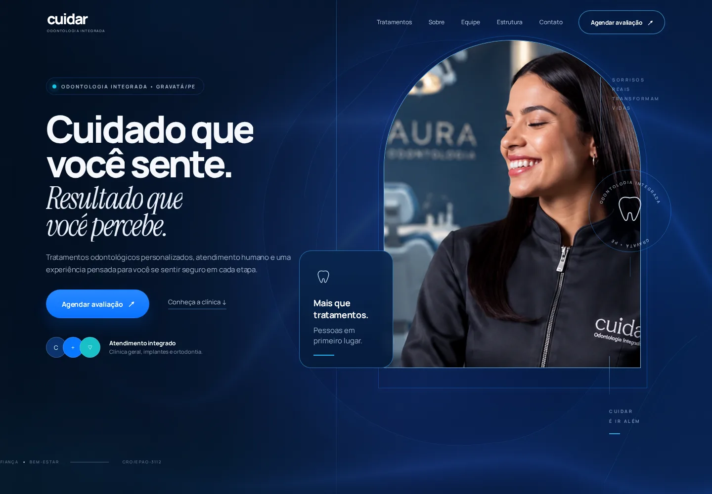
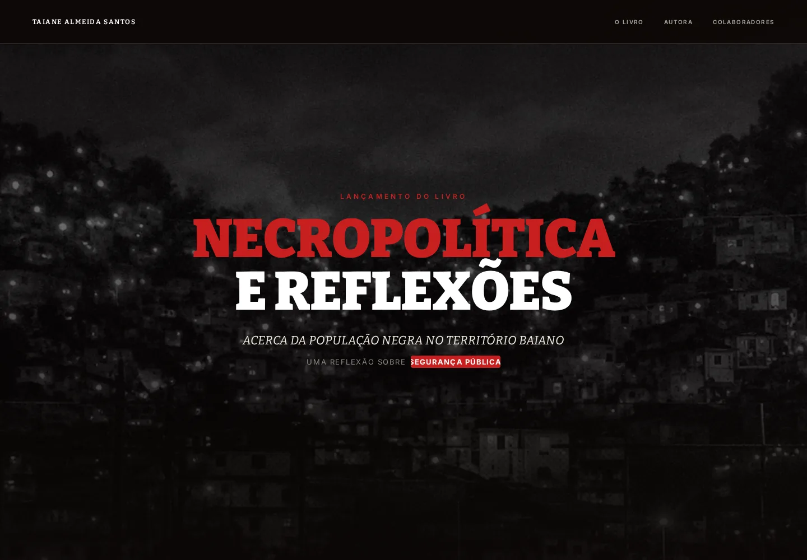
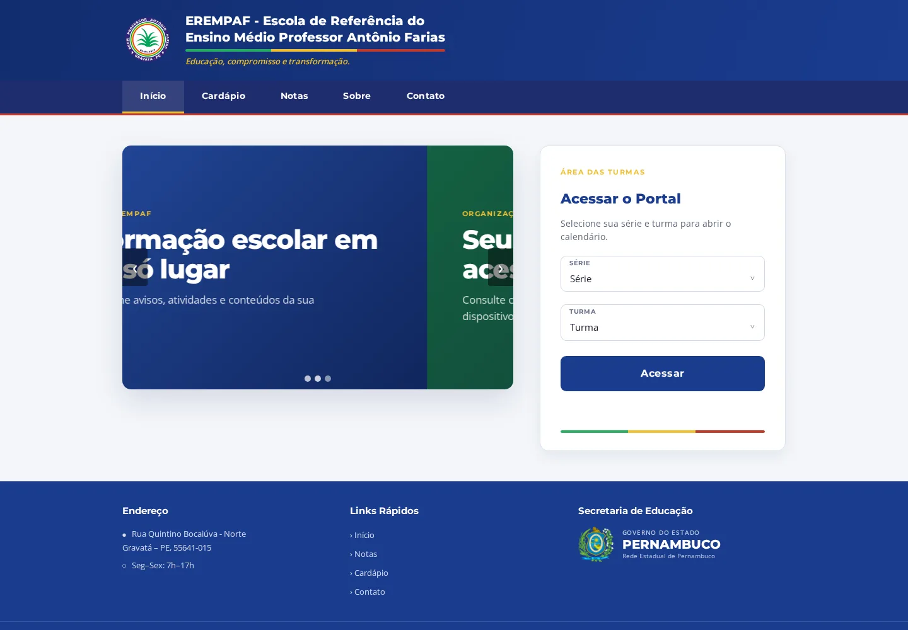
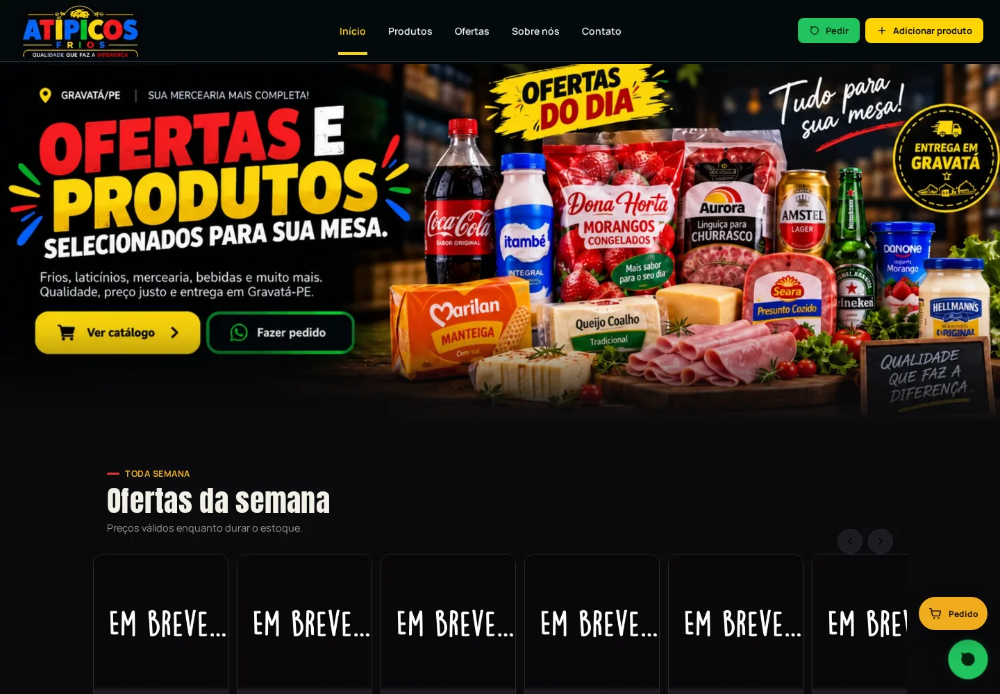
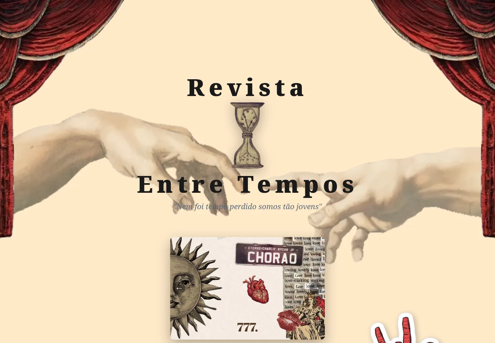
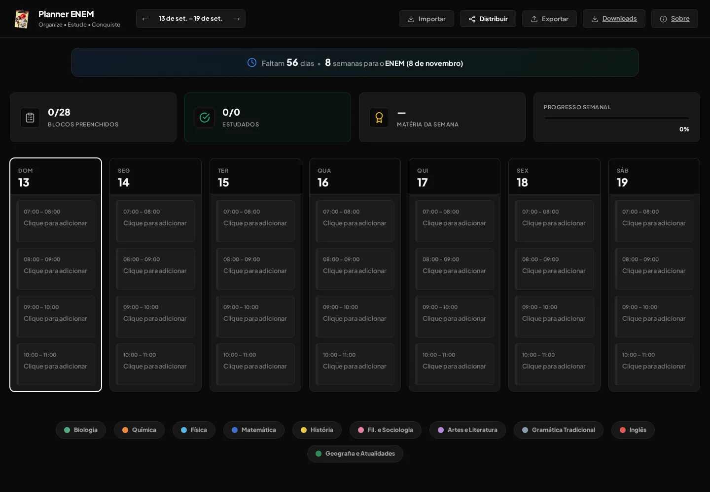

cuidar-odontologia.vercel.app01 / SAÚDE
Cuidar Odontologia
Site institucional responsivo para apresentar tratamentos, equipe, estrutura e canais de atendimento.
Sites e sistemas desenvolvidos do zero para marcas, empresas e ideias que querem ir além do comum.
Projetos reais, publicados e construídos por nós. Sem cliente fictício, métrica inventada ou interface de mentira.

cuidar-odontologia.vercel.appSite institucional responsivo para apresentar tratamentos, equipe, estrutura e canais de atendimento.

taianealmeida.com.brExperiência editorial para apresentar a autora, a obra “Necropolítica e Reflexões” e seus colaboradores.

portalerempaf.vercel.appPortal escolar com páginas por turma, calendário, avisos, conteúdos, cardápio e autenticação.

atpicosfrios.vercel.appSite institucional e catálogo digital com ofertas, produtos e painel próprio para gerenciamento.

entretempos.blog.brRevista eletrônica interativa para explorar arte, literatura, música e cultura em uma experiência autoral.

enemplanner.vercel.appPlanner semanal para organizar matérias, distribuir horários e acompanhar o progresso de estudos.
Começamos pelo que o negócio precisa. A tecnologia transforma essa necessidade em algo claro, útil e pronto para crescer.
Sites institucionais, landing pages e experiências digitais para apresentar marcas e gerar oportunidades.
↗Painéis, gestão, dashboards e ferramentas internas criadas para uma operação específica.
↗Reservas, consultas, horários, disponibilidade e organização de clientes em um fluxo simples.
↗Produtos, cardápios, pedidos e catálogos digitais integrados aos canais de venda.
↗Integrações entre serviços, dados e processos para reduzir trabalho repetitivo e conectar a operação.
↗Problemas diferentes não pedem a mesma solução pronta.
Cada projeto começa antes do código: entendendo o contexto, as pessoas e o que realmente precisa funcionar.
Estratégia, design e desenvolvimento trabalhando como uma coisa só. Essa é a Devarity.
Um espaço para testar tecnologias, prototipar ferramentas e transformar curiosidade em soluções que podem ganhar o mundo real.
~/devarity/labs
├── ai/
├── automations/
├── interfaces/
├── tools/
├── prototypes/
└── experiments.logA Devarity Web é um estúdio de desenvolvimento web fundado em 2026 em Gravatá, Pernambuco, por Davi Gabriel e Murilo Gabriel. Criamos sites profissionais, sistemas web sob medida, automações, agendamentos, lojas e catálogos digitais para marcas e empresas no Brasil. Conheça a Devarity →
TEM UMA IDEIA?
Conta pra gente o que você quer construir. A Devarity organiza o caminho e desenvolve a solução do início ao lançamento.
FALAR COM A DEVARITY ↗CANAL OFICIAL / DEVARITY WEB